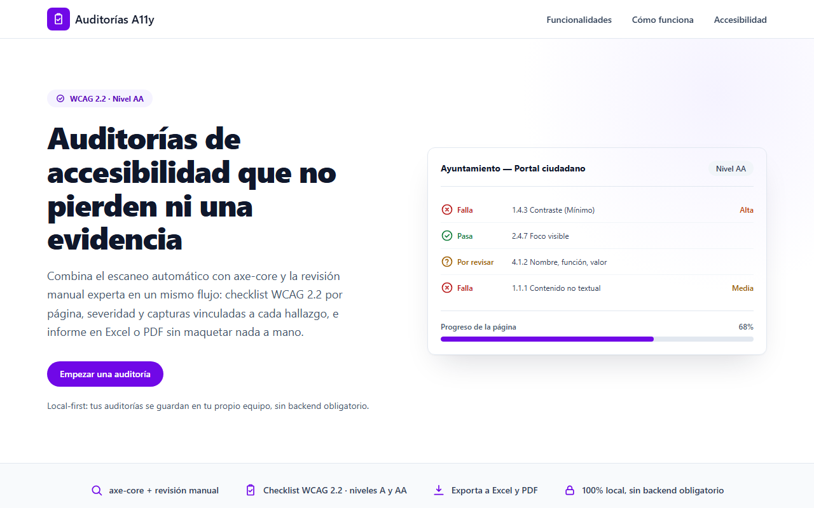

Maquetación fiel y mantenible
Convierto diseños de Figma o XD en HTML semántico y SASS organizado con BEM. Componentes reutilizables, listos para integrar en un CMS como OpenCms o en un framework.
Abierto a nuevas oportunidades
Llevo 8 años convirtiendo diseños en interfaces con HTML semántico, CSS/SASS y JavaScript, y compruebo que funcionan para todas las personas (WCAG 2.2 AA) con lectores de pantalla como NVDA y TalkBack.
Proyectos para Generalitat de Catalunya y Telefónica

Soy maquetador front-end y llevo 8 años convirtiendo diseños en interfaces que funcionan en cualquier dispositivo y que pueden usar todas las personas. He trabajado en proyectos para la Generalitat de Catalunya y Telefónica dentro de Altran / Capgemini.
Parto de HTML semántico, organizo los estilos con SASS y metodología BEM para que los componentes sean reutilizables y fáciles de mantener, y uso Astro cuando el proyecto pide una web rápida y sin JavaScript innecesario.
La accesibilidad forma parte de mi proceso desde el principio, no llega al final como revisión. Aplico las WCAG 2.2 nivel AA, pruebo con NVDA y TalkBack, y he elaborado informes de accesibilidad con Siteimprove y el Observatorio de Accesibilidad del Gobierno de España.
Convierto diseños de Figma o XD en HTML semántico y SASS organizado con BEM. Componentes reutilizables, listos para integrar en un CMS como OpenCms o en un framework.
Enfoque mobile-first con breakpoints bien definidos. Reviso el resultado en móvil, tablet y escritorio antes de darlo por terminado.
Audito con los criterios WCAG (A, AA y AAA) combinando herramientas automáticas y pruebas manuales con lectores de pantalla, para que el sitio lo pueda usar cualquier persona, con o sin discapacidad visual, motora, auditiva o cognitiva.
Altran / Capgemini · Maquetador Web · 2018–2026. Proyectos para la Generalitat de Catalunya y Telefónica.

Mi trabajo
Actualización y mantenimiento de plantillas corporativas de Telefónica, con cambios en HTML para asegurar la consistencia de la maquetación, y gestión básica de la base de datos en Oracle.
Mi trabajo
Maquetación de componentes para la plataforma OpenCms de la Generalitat de Catalunya. Informes detallados de accesibilidad web, con análisis automáticos y manuales para detectar errores mediante el Observatorio de Accesibilidad del Gobierno de España y Siteimprove.

Mi trabajo
Maquetación de los componentes del portal Feina Activa de la Generalitat de Catalunya.

Mi trabajo
Aplicación web para auditores de accesibilidad que combina el escaneo automático con axe-core y la revisión manual en un mismo flujo: checklist WCAG 2.2 (niveles A y AA) por página, severidad y capturas vinculadas a cada hallazgo, e informe exportable a Excel o PDF. Desarrollada en Angular, funciona sin backend: toda la información se guarda en el localStorage del navegador.
Atención al detalle
Reviso pixel a pixel que la maquetación coincida con el diseño en todos los breakpoints antes de dar por terminado un proyecto.
Comunicación clara
Explico mis decisiones técnicas en lenguaje accesible y mantengo al cliente informado en cada fase del proyecto.
Gestión del tiempo
Trabajo con estimaciones realistas y cumplo los plazos acordados.
Trabajo en equipo
Colaboro fluidamente con diseñadores, desarrolladores y clientes finales, adaptando mi lenguaje al interlocutor.
Aprendizaje continuo
El frontend evoluciona rápido. Dedico tiempo semanal a leer specs del W3C, explorar nuevas APIs CSS y experimentar con herramientas emergentes.
Busco incorporarme a un equipo de front-end donde la calidad del código y la accesibilidad cuenten. Escríbeme por correo o LinkedIn.